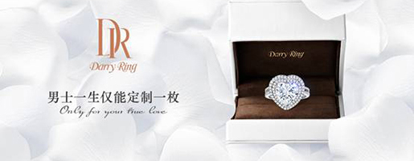
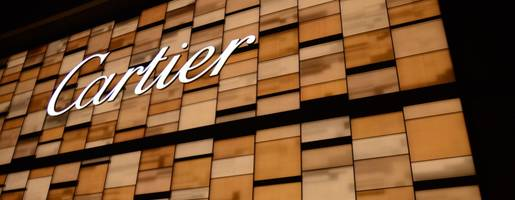
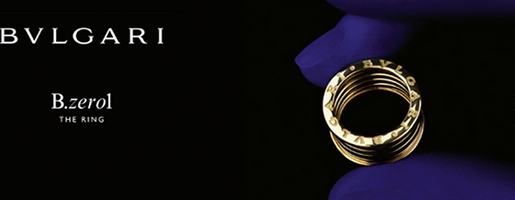
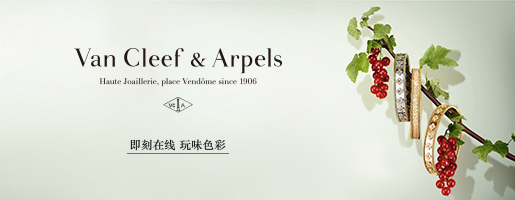
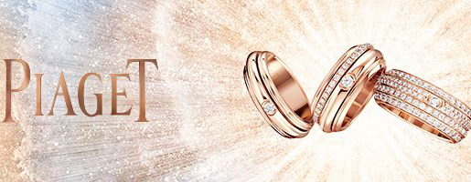

2015年六大求婚钻戒品牌排行榜
倍受瞩目的2015年十大求婚钻戒品牌新鲜出炉！综合《国际珠宝》、《时尚新娘》等业内的权威杂志评选榜单、并结合国际珠宝协会行业数据，珠宝行业媒体对全球求婚钻戒品牌进行了全方位调研！从品牌影响力、美誉度以及钻石品质及深刻价值意义，对珠宝市场的积极作用和在恋人心目中的喜爱地位，最终评选出2015十大求婚钻戒品牌！这些珠宝品牌有的因浪漫信仰而上榜，有的因至臻品质而迷人，一起看看都有那些钻戒品牌能够入围十大求婚钻戒榜单吧！

Top1:DarryRing（DR真爱戒指）
 从第一枚DarryRing（DR真爱戒指）诞生至今，便被赋予了“一生・唯一・真爱”的浪漫理念。这里有着全世界最浪漫独特的约定：每位男士凭身份证ID一生仅能定制一枚，赠予此生唯一挚爱之人。以一枚求婚戒指许诺神圣至高的承诺，堪称为传奇珍宝。
DarryRing是天生的求婚钻戒，更是一生相守承诺的见证，被赞为女性一生中最不可或缺的珍宝。它是恋人们的一份唯一真爱信仰，不少名人明星亦为之疯狂。不过在纷杂的娱乐圈中，由于DarryRing一生仅一枚的独特性，它也一视平等地将许多明星拒之门外，唯有同样秉承真爱理念之人方能幸运拥有一枚。而这些追求“一心一意，一生一世”爱情的一群人自称为DR族，传播纯粹真爱正能量，具有极为浪漫非凡的意义。
DarryRing以爱设计求婚钻戒，这里的每一件作品都是爱和美的艺术品。其中，心形求婚钻戒为DarryRing品牌的象征符号，而罕见的稀世粉钻更是极其少数人可以拥有，美轮美奂的设计，在加上深刻浪漫的蕴意，足够交给隽永时光去证明一份恒久不变的爱意。
Top2:卡地亚Cartier

卡地亚Cartier作为老牌钻戒品牌依旧强势，源起于法国的背景让其倍含浪漫气息，凭借深厚的文化底蕴，卡地亚在设计上独具匠心，拥有一干经典作品，并借助珍贵罕有的材质用心打造精美绝伦的珠宝作品。
近年来，卡地亚重视中国市场，加快在中国内地进军的脚步，一批精品店旗舰店的开业加深了客户对于该品牌的印象，另外，卡地亚寻找魅力与气质兼修的明星，秉持精品路线，找到了最贴合品牌的推广路线。
目前，卡地亚的TRINITYRUBAN系列是其求婚钻戒品牌的代表作，独特的设计理念和精雕细琢的做工，令无数情侣陶醉其中。作为老牌奢侈品品牌，卡地亚本次入围榜单显然没有争议。
Top3:蒂芙尼公司Tiffany&Co

自1837年以来，Tiffany蒂芙尼传奇杰作引领风格，见证着世间无数至臻至美的爱情故事，一直为客户提供优质的服务。凭借简约自然的设计风格，传承了多代经典作品。蒂芙尼的黄钻系列彰显了钻石的稀世珍贵，成为蒂芙尼钻石传承和精湛工艺的象征，是蒂芙尼杰出黄钻设计的灵感之源。对于很多浪漫人士来说，蒂芙尼的作品就像一枚打开梦想世界的钥匙，美轮美奂。佩戴蒂芙尼的作品对他们来说是荣耀，它并不是商品，而是艺术品。
Top4:宝格丽Bvlgari
 来自意大利，传承130年的经典品牌宝格丽，同样是求婚钻戒品牌的必要之选。宝格丽的特色在于除了优质的服务、卓越的品质之外，宝格丽的钻戒设计上屡有新颖性，作品非常时尚，随着时代特征而不断加入新的设计元素。
宝格丽珠宝作品以不同女性的特点入手，尊重个性，保留个体的独特性，同时在作品上体现了宝格丽独具一格的个性风格。
相信评价2015年十大求婚钻戒品牌，意大利经典――宝格丽一定会占据一席。
Top5:梵克雅宝VanCleef&Arpels
 梵克雅宝这一源于真实爱情故事的法国顶级珠宝品牌，在其百年的发展历程中见证了无数动人的爱情传奇，其Bridal婚嫁系列更因璀璨美钻和精湛工艺博得名媛淑女们的青睐。
梵克雅宝曾携旗下全新高级珠宝系列LesVoyagesExtraordinaires惊艳亮相第十五届巴黎古董双年展，瞬间绽放璀璨雍容。其中包含四款专为此次双年展特别设计的戒指，为了延展产品那创意无限的想象力，各色名贵宝石连袂舞动摄人心魄的奢美华尔兹，令人心神往之。
蕴含着巴黎浪漫设计理念的梵克雅宝钻戒，沁染着其独树一帜的设计理念的件件作品，相信一直是浪漫人士心中重要的标杆。
Top6:伯爵PIAGET
伯爵以“永远做得比要求的更好”为品牌精神，也由此打造出来的每一件作品总是令人无限赞叹。它将精湛的工艺和创意融入每件作品，近乎完美的设计让所见之人都无法抗拒。伯爵作品有一种与生俱来的奢侈尊贵精神，而其中伯爵的玫瑰系列求婚钻戒更是受到万千恋人的喜爱，其优雅浪漫，为爱倾情绽放，足以动人。